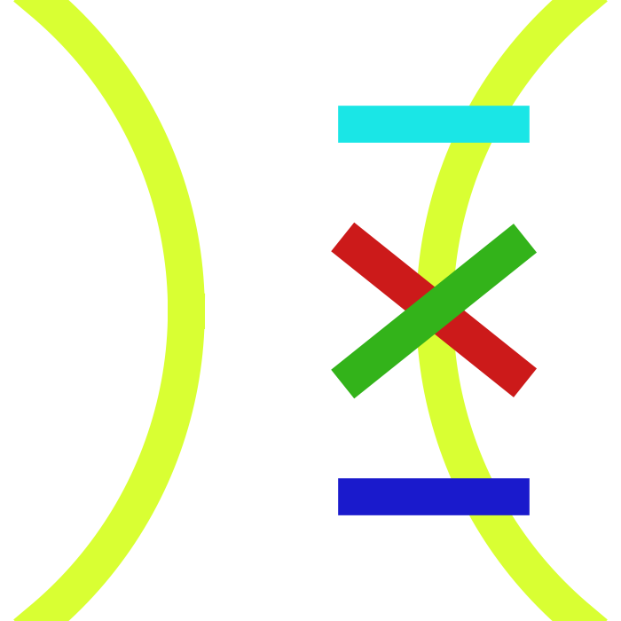

写给每一个像我的人。
To everyone like me.
作者 - Author

Tennisatw，业余极客，业余诗人，理论化学专业。
Tennisatw, an amateur geek, and an amateur poet, major in theoretical chemistry.
邮箱 - Email: tennisatw@mail.com
Tennisbot
基于GPT4，Python，JavaScript的机器人助手，本博客的看板娘（见左下角），网球发球机（？）。当点击或悬停在有阴影的段落上时（比如这一段），她会发表自己的意见。如果左下角只有一个“Tennisbot”按钮，点一下它。
邮箱：tennisbot0@gmail.com
A chatbot based on GPT4, Python, and JavaScript, yuru-chara of the blog (see bottom left), and tennis ball machine (maybe?). When clicking or hovering over the shaded paragraphs (such as this one), she will give her own opinion. If there is only a button named "Tennisbot" in the bottom left corner, just click it.
Email: tennisbot0@gmail.com
Discord 群 - Discord Group
本博客有一个读者粉丝交流的Discord群，欢迎加入。可以在群里与Tennisbot或我聊天，中英文均可。
There is a Discord group for the readers of this blog. Everyone is welcome to join and chat with Tennisbot or me in this group. Chinese and English are both welcome.
本博客 - This Blog
本博客是一个个人博客，主要记录作者本人的思考和学习心得（以及各种各样的随想）。但本人也保证，大部分文章对读者而言都是有意义的。本人争取在每篇博文中，做到语言轻松灵动，但内容扎实硬核。
欢迎约稿，欢迎投稿，欢迎互动，欢迎转载（需署名）。
This blog is a personal space where I document my thoughts, learning insights, and random thoughts. That said, I promise that most of the posts will hold value for readers. I strive to strike a balance in every entry—light and lively in tone, yet solid and substantial in content.
Commissions, submissions, interactions, and reprints (with attribution) are all warmly welcome.
Slogen中“像我的人”特指 兴趣广泛，有幽默感，追求更高的智慧，遇事喜欢刨根问底 的人。
The slogan's phrase "people like me" refers specifically to those with broad interests, a sense of humor, a thirst for deeper wisdom, and a habit of digging into the root of things.
本博客使用Hexo制作，如果图片显示不出来，请刷新一下页面。
The blog is built with Hexo—if images fail to load, try refreshing the page.
本博客的大部分文章由中英文“交错”写成，它们的内容基本完全一致。读一遍汉语，再读一遍英语，我保证你们的英语能力提升飞快。
Most of the articles on this blog are written in an interwoven mix of Chinese and English, with their content being essentially identical. Learning a few Chinese characters never hurts, especially if you have the time.
此外，左上角（电脑版）或上方（手机版）有google翻译插件，你会需要它的。
Additionally, there's a Google Translate plugin at the top left corner (desktop version) or top (mobile version) of the page. if needed.
如果加载Tennisbot花费太多时间，或者影响了正常阅读，或者只是不想看到她，可以将鼠标放到聊天框上，然后点击弹出的“关闭”按钮来隐藏她，此时左下角会出现一个蓝紫色标签。如果想再次看到Tennisbot，只需点击标签即可。
If loading Tennisbot takes too much time, interferes with your reading, or if you simply do not want to see it, you can hide it by hovering your mouse over the chatbox and clicking on the "Close" button that appears. At this point, a purple-blue tag will appear in the lower left corner. If you wish to see Tennisbot again, just click on the tag.
非郑重声明：作者本人有正式工作，从未收取任何组织的任何费用参与宣传。
I have formal job and have never charged any fees to promote for any organizations. Trust me bro.
评论 - Comments
永远欢迎所有人在博客下方评论留言，即使你我意见不同。
Everyone is always welcome to leave comments under the blog, even those with differing opinions.
本博客的评论插件为Waline，支持以Markdown的格式进行评论。
The comment plugin used on this blog is Waline, which supports comments in Markdown format.
多想，多读，多练，多问 - Think more, read more, practice more, and ask more.
此外，如果可能的话，做一个善良的人 - Moreover, if possible, strive to be kind.